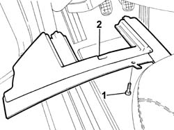
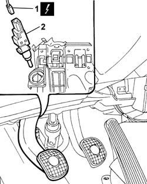

1060G38 Switch on brake pedal - R.R.
- Path
- Procedures > 1060G DIESEL INJECTION PRESSURE PUMP ELECTRONIC CONTROL > 1060G38 Switch on brake pedal - R.R.
- Kind
- repair procedure (removal / refitting; the operation number is the code)
- Applies to
- engines: 2.4 20V, 3.0 V6, 3.2 V6; all production periods
- Interactive page
- https://sloeber94.github.io/elrnDB-lThss/en/#/257120
Applies to: engines: 2.4 20V; all production periods
 Removing
Removing
 Refitting
Refitting- Disconnect the negative battery terminal.
1. Undo the fixing bolts.
2. Remove the trim under the dashboard, driver's side.

Applies to: engines: 2.4 20V; all production periods
1. Disconnect the electrical connection for the brake pedal switch.
 | Description | Connector |
|---|---|---|
. | Switch on brake pedal | I030 |
2. Undo and remove the switch from the brake pedal.

Applies to: engines: 2.4 20V; all production periods
Refitting
Removing- Position the brake pedal in the end of travel position.
- Fit the switch on the bracket rotating it about 60° in a clockwise direction until the attachment to the bracket can be heard.
- Release the brake pedal so that the brake servo push rod is in the rest position.
- Carry out a complete brake pedal stroke so that the switch beds into the housing.
- Check that there is clearance between the bracket on the pedal and the switch.
- Connect the electrical connection.
| Description | Connector |
|---|---|---|
. | Switch on brake pedal | I030 |
- Fit the trim under the dashboard, driver's side.
- Connect the negative battery terminal.
Applies to: engines: 3.0 V6, 3.2 V6; all production periods